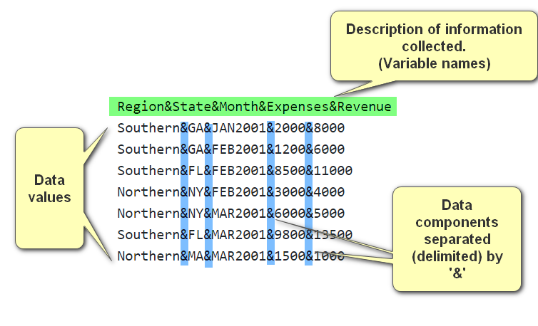

*Copyright @ www.mycsg.in;
What is the word meaning of import
Import means bringing data from an external source into SAS so that the data can be processed, analysed, and reported
Why do we need a procedure for import
Data is often collected and stored outside SAS in text files, spreadsheets, databases, and other applications
SAS procedures and DATA steps work most effectively on SAS datasets
`proc import` helps convert external files into SAS datasets that can then be used in SAS programs
What does PROC IMPORT do
The IMPORT procedure reads data from an external file and writes it into a SAS dataset
SAS can infer metadata such as variable names, types, and lengths depending on the file type and options used
What kinds of files can be imported using PROC IMPORT
Delimited text files such as CSV or other separator-based files can be imported with `dbms=dlm` or other DBMS options
Excel workbooks can also be imported when the SAS environment supports that access path
The exact file types available depend on the SAS installation and licensed components
Delimited file example, ampersand as delimiter
Delimited file example, ampersand as delimiter

What information do we need to provide to PROC IMPORT
The full path and filename of the source file
The name of the SAS output dataset
The file type or DBMS option
Whether the first row contains column headings
The delimiter when importing a delimited file
Optional control over the starting row or worksheet name depending on the source type
Import data from an ampersand-delimited text file into a dataset named delimited
`datafile=` points to the external text file
`dbms=dlm` tells SAS that the source is a delimited text file
`delimiter='&'` specifies the character that separates each field
`getnames=yes` tells SAS to use the first row of the file as variable names
/* content of delimited file Region&State&Month&Expenses&Revenue Southern&GA&JAN2001&2000&8000 Southern&GA&FEB2001&1200&6000 Southern&FL&FEB2001&8500&11000 Northern&NY&FEB2001&3000&4000 Northern&NY&MAR2001&6000&5000 Southern&FL&MAR2001&9800&13500 Northern&MA&MAR2001&1500&1000 */ proc import datafile="&root2._5001.txt" out=delimited dbms=dlm replace; delimiter='&'; getnames=yes; run;
Copy Code
View Log
SAS Log
/* content of delimited file Region&State&Month&Expenses&Revenue Southern&GA&JAN2001&2000&8000 Southern&GA&FEB2001&1200&6000 Southern&FL&FEB2001&8500&11000 Northern&NY&FEB2001&3000&4000 Northern&NY&MAR2001&6000&5000 Southern&FL&MAR2001&9800&13500 Northern&MA&MAR2001&1500&1000 */ proc import datafile="&root2._5001.txt" out=delimited dbms=dlm replace; delimiter='&'; getnames=yes; run; 2034745 /********************************************************************** 2034746 * PRODUCT: SAS 2034747 * VERSION: 9.4 2034748 * CREATOR: External File Interface 2034749 * DATE: 02FEB16 2034750 * DESC: Generated SAS Datastep Code 2034751 * TEMPLATE SOURCE: (None Specified.) 2034752 ***********************************************************************/ 2034753 data WORK.DELIMITED ; 2034754 %let _EFIERR_ = 0; /* set the ERROR detection macro variable */ 2034755 infile 'D:\SAS\Home\dev\clinical_sas_samples\mycsg\SAS\SAS_PROCIMPORT\SAS_PROCIMPORT_L101\SAS_PROCIMPORT_L101_5001.txt' delimiter = '&' 2034755! MISSOVER DSD lrecl=32767 firstobs=2 ; 2034756 informat Region $8. ; 2034757 informat State $2. ; 2034758 informat Month MONYY7. ; 2034759 informat Expenses best32. ; 2034760 informat Revenue best32. ; 2034761 format Region $8. ; 2034762 format State $2. ; 2034763 format Month MONYY7. ; 2034764 format Expenses best12. ; 2034765 format Revenue best12. ; 2034766 input 2034767 Region $ 2034768 State $ 2034769 Month 2034770 Expenses 2034771 Revenue 2034772 ; 2034773 if _ERROR_ then call symputx('_EFIERR_',1); /* set ERROR detection macro variable */ 2034774 run; NOTE: The infile 'D:\SAS\Home\dev\clinical_sas_samples\mycsg\SAS\SAS_PROCIMPORT\SAS_PROCIMPORT_L101\SAS_PROCIMPORT_L101_5001.txt' is: Filename=D:\SAS\Home\dev\clinical_sas_samples\mycsg\SAS\SAS_PROCIMPORT\SAS_PROCIMPORT_L101\SAS_PROCIMPORT_L101_5001.txt, RECFM=V,LRECL=32767,File Size (bytes)=254, Last Modified=02 February 2025 16:31:25, Create Time=02 February 2025 16:31:25 NOTE: 7 records were read from the infile 'D:\SAS\Home\dev\clinical_sas_samples\mycsg\SAS\SAS_PROCIMPORT\SAS_PROCIMPORT_L101\SAS_PROCIMPORT_L101_5001.txt'. The minimum record length was 29. The maximum record length was 30. NOTE: The data set WORK.DELIMITED has 7 observations and 5 variables. NOTE: DATA statement used (Total process time): real time 0.01 seconds cpu time 0.00 seconds 7 rows created in WORK.DELIMITED from D:\SAS\Home\dev\clinical_sas_samples\mycsg\SAS\SAS_PROCIMPORT\SAS_PROCIMPORT_L101\SAS_PROCIMPORT_L101_5001.txt. NOTE: WORK.DELIMITED data set was successfully created. NOTE: The data set WORK.DELIMITED has 7 observations and 5 variables. NOTE: PROCEDURE IMPORT used (Total process time): real time 0.28 seconds cpu time 0.12 seconds
The output dataset `delimited` should contain the rows and columns from the text file
Inspect the imported dataset and confirm that the first line became variable names rather than a data row
View Data
Dataset View
Import data from Excel files
Import the data from the males sheet of mydata workbook into a dataset named males
Here the `sheet=` option identifies which worksheet to read from the workbook
The imported data is written to a SAS dataset named `males`
proc import datafile="&root2._mydata.xlsx" out=males replace; sheet="males"; run;
Copy Code
View Log
SAS Log
proc import datafile="&root2._mydata.xlsx" out=males replace; sheet="males"; run; NOTE: WORK.MALES data set was successfully created. NOTE: The data set WORK.MALES has 10 observations and 5 variables. NOTE: PROCEDURE IMPORT used (Total process time): real time 0.17 seconds cpu time 0.13 seconds
View Data
Dataset View
Import the data from the females sheet of mydata workbook into a dataset named females
proc import datafile="&root2._mydata.xlsx" out=females replace; sheet="females"; run;
Copy Code
View Log
SAS Log
proc import datafile="&root2._mydata.xlsx" out=females replace; sheet="females"; run; NOTE: WORK.FEMALES data set was successfully created. NOTE: The data set WORK.FEMALES has 9 observations and 5 variables. NOTE: PROCEDURE IMPORT used (Total process time): real time 0.10 seconds cpu time 0.07 seconds
View Data
Dataset View
Import the data from the class sheet of mydata workbook into a dataset named class
proc import datafile="&root2._mydata.xlsx" out=class replace; sheet="class"; run;
Copy Code
View Log
SAS Log
proc import datafile="&root2._mydata.xlsx" out=class replace; sheet="class"; run; NOTE: WORK.CLASS data set was successfully created. NOTE: The data set WORK.CLASS has 19 observations and 5 variables. NOTE: PROCEDURE IMPORT used (Total process time): real time 0.12 seconds cpu time 0.04 seconds
View Data
Dataset View
Key points to remember
`proc import` creates SAS datasets from external files
Use `dbms=` to describe the source type
Use `delimiter=` and `getnames=` for delimited text imports when needed
Use `sheet=` when importing from an Excel workbook
Always review the imported dataset to confirm that variable names, types, and values were interpreted correctly